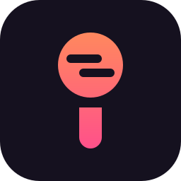
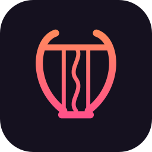

El punto de la i es la cabeza del micrófono y su rejilla son dos versos de karaoke. El tallo es el mango.

Una lira de trazo fino, eco del nombre. La cuerda central es una onda: la voz que vibra.
Una corchea con la plica abajo que también es micrófono, redibujada con geometría limpia.